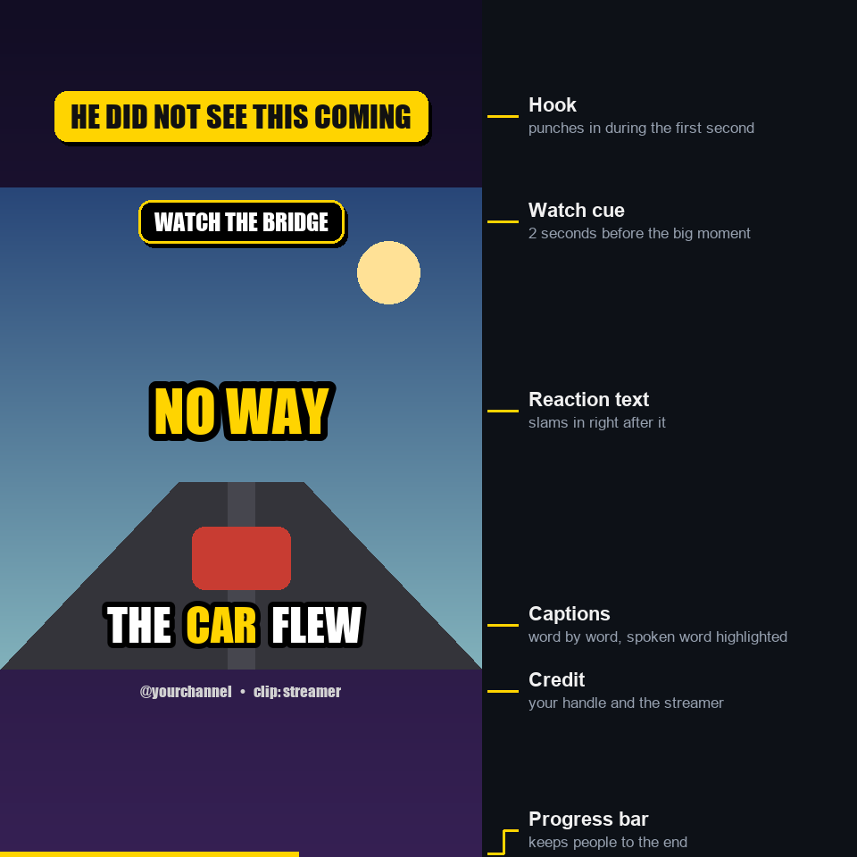

GTA 6 Clipper
A free, open-source tool that finds the best GTA 6 stream moments, edits them into YouTube Shorts and posts them for you. It is a Claude Code skill, works with OpenAI Codex, and runs on your own computer.
Get it on GitHub Install in 5 minutesInstall it as a Claude Code skill
/plugin marketplace add taarruunnnn/gta6-clipper /plugin install gta6-clipper@gta6-clipper
Then ask Claude: “Use gta6-clipper to set up a clips channel for GTA 6 and show me today's best moments.” Using OpenAI Codex? It reads the project's AGENTS.md and can run the same commands.
What the GTA 6 clipper does
- Finds momentsToday's most-viewed Twitch viewer clips, live streams (it cuts when chat explodes) and finished YouTube streams.
- Keeps only the good onesAn AI judge looks at frames and the transcript and rejects dull, unsafe or off-language clips.
- Edits vertical ShortsHook, animated word-by-word captions, emojis, zoom on the peak, a narrator and sound effects.
- Writes titles people searchPulls live YouTube search phrases for GTA 6 and picks the title by a scoring rule.
- Posts to YouTubeDirect upload through your own free Google project, up to 100 a day.
- LearnsReads view counts back and feeds your best hooks and titles into the next clips.

Questions
- Is the GTA 6 clipper free?
- Yes. It is MIT-licensed and open source. You need a Claude Code subscription for the AI judge; YouTube posting is free.
- Does it only work for GTA 6?
- No. It was built for GTA 6 clips, but it works for any game with a Twitch category. Change two settings.
- Does it work with Claude and with Codex?
- It ships as a Claude Code plugin with a skill. OpenAI's Codex command-line agent can run it through the included AGENTS.md. ChatGPT in the browser can only guide you, because it cannot run programs on your computer.
- What computer do I need?
- It is developed and tested on Apple Silicon Macs. Windows and Linux support is written but untested.
- Will it get me views?
- Nobody can promise that. It gives you speed and consistency; views depend on the moments, the competition and luck.
- Can I post other people's streams?
- Only when the creator allows it. The project's README explains how to use it responsibly.